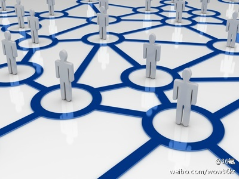

[呵呵]//@栾义来:是滴，我说的是 工具+社区+电商，顺序不能乱 //@Ada李力:内容+社群+商业，记得@栾义来 也曾经提过@36氪:你不可忽略的互联网商业模式和创新方法——社群商业| 内容是媒体属性，用来做流量的入口；社群是关系属性，用来沉淀流量；商业是交易属性，用来变现流量价值。用户因为好的产品/内容/工具而聚合，然后通过社群来沉淀，最后有了深度联结的用户，用定制化交易来满足需求。你不可忽略的互联网商业模式和创新方法——社群商业 

 你不可忽略的互联网商业模式和创新方法——社群商业
你不可忽略的互联网商业模式和创新方法——社群商业